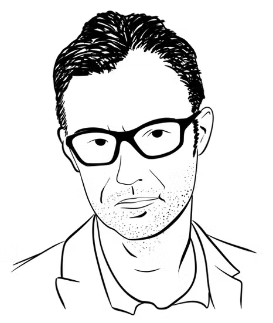
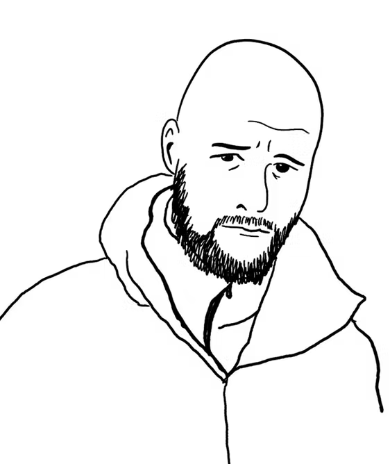
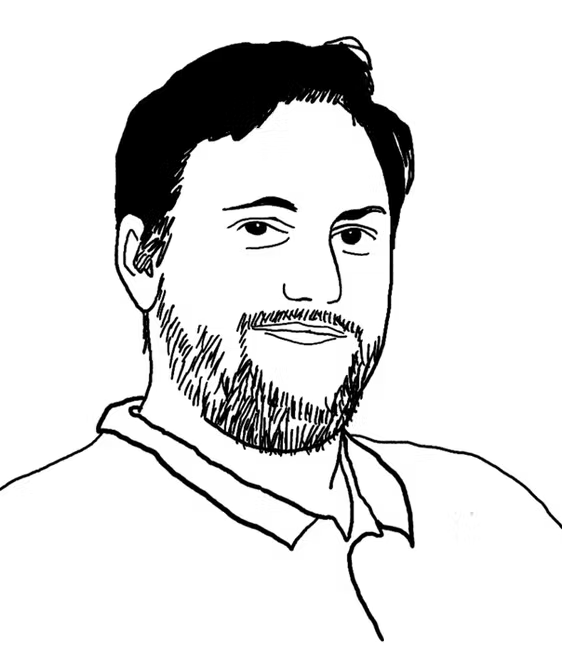
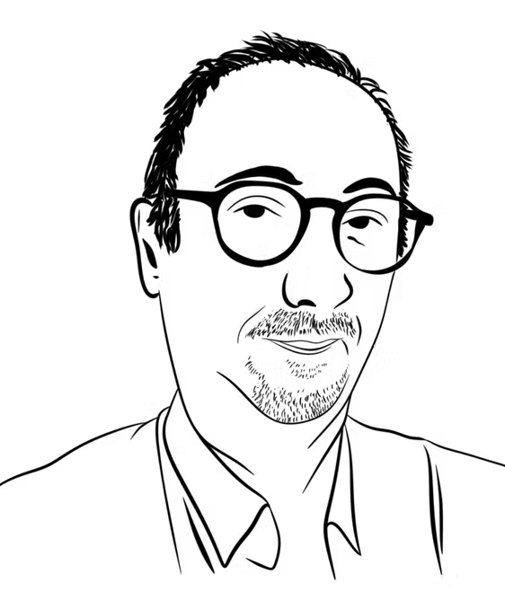
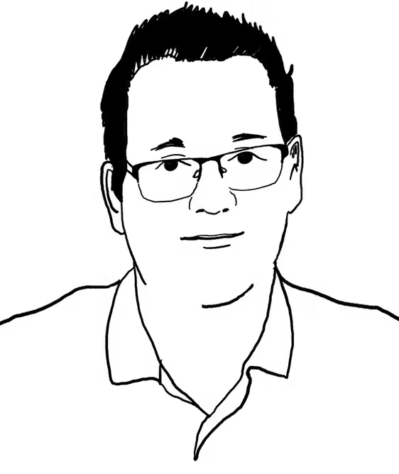
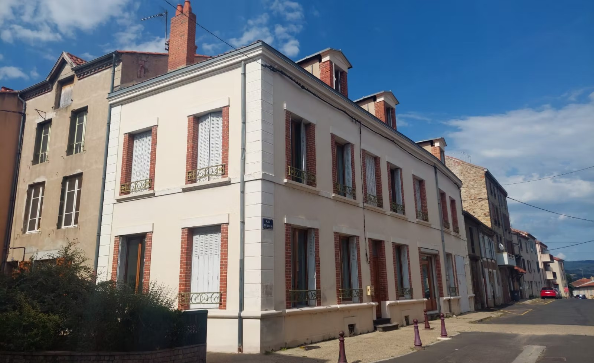

Docteur·es et ingénieur·es passionné·es, nous combinons chimie analytique, ACV et chémo-informatique pour transformer les laboratoires.






Situé à Brioude, en Auvergne, notre laboratoire nous permet d'expérimenter les solutions que nous proposons à nos clients. Conçu comme un lieu de rencontres et de coworking, il accueille aussi des associations comme la Fresque du Climat.
Réserver une salle →Nous sommes toujours en quête de talents passionnés. Envoyez-nous votre candidature.
Postuler →